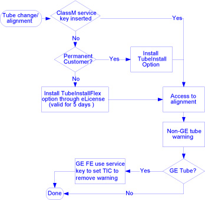

Operating Documentation
Direction 5181178-800, Rev# 16
BrightSpeed Select Service Methods Gen
Module Version 1.0, Version Date 6/21/10
Operating Documentation |
| Required Persons | Preliminary Reqs | Procedure | Finalization |
|---|---|---|---|
| 1 | Not Applicable | 15 mins | Not Applicable |
This module describes CT tube identification solution.
This tube identification solution covers all CT products except those systems that already contain a GE Tube SmartID board and Tube Install Certification (TIC) on the scanner. The current tubes that include the SmartID board are the Hercules and Perseus.
Therefore, the following CT systems will not be included in this solution: VCT, HP100, RT, and HD, because they have a SmartID and TIC solution.
Tube ID is capable with the following configurations: BrightSpeed, BrightSpeed Select.
| Last Revised: | Dec 2009 |
There are two types of sites. The system with TubeInstall option (called permanent customer), the tube alignment process has no change. The other systems will require a TubeInstallFlex option eLicense to enable access tube alignment for 5 days. For either site, the tube alignment workflow for GE FE with Class M service key has no change.
View the flowchart for detailed process.

No finalization steps.